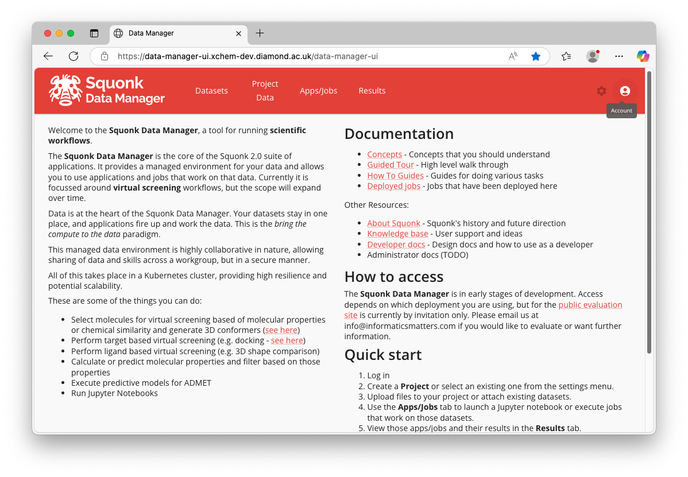
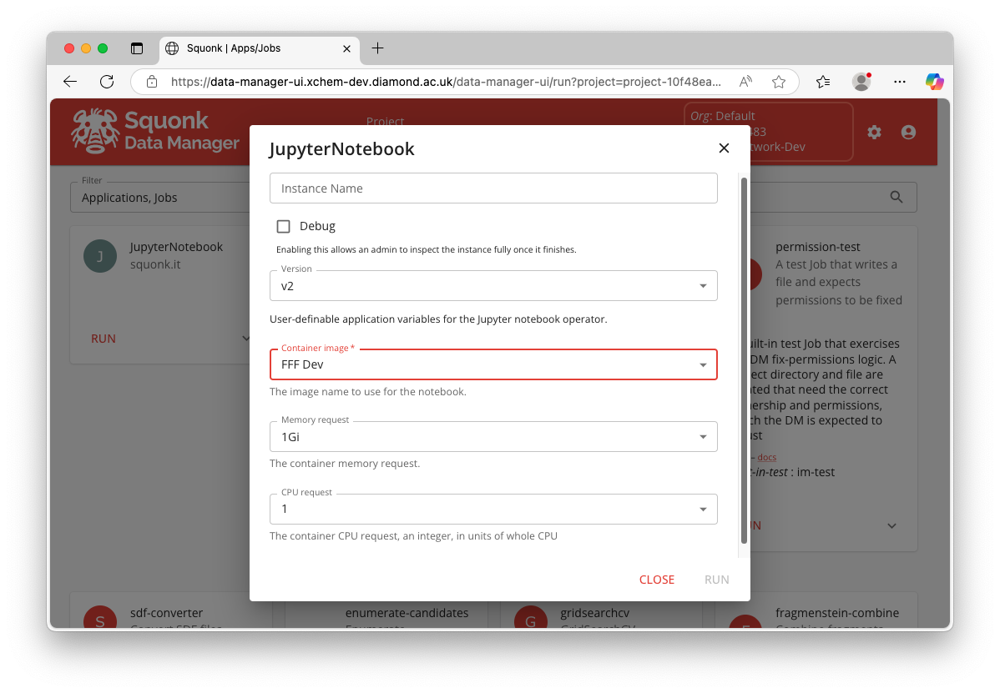
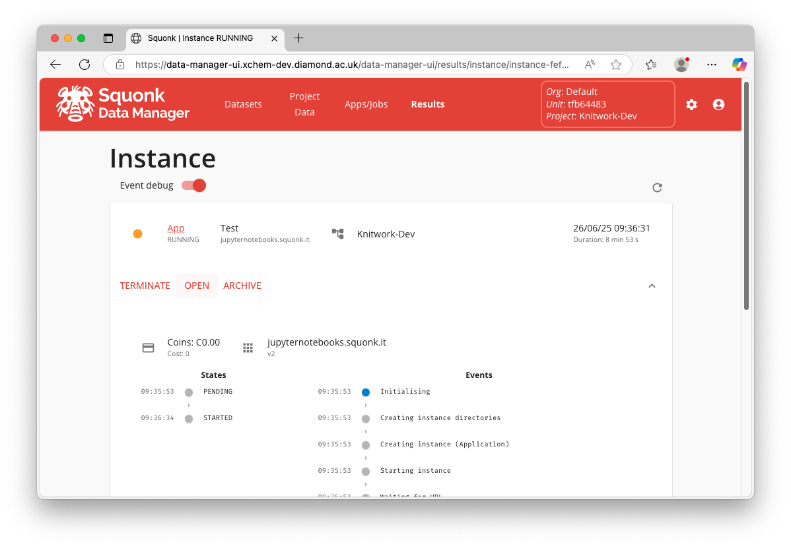
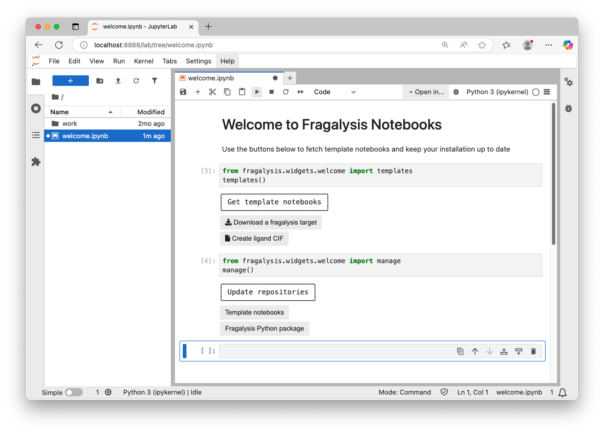

Jupyter Notebooks in Fragalysis
Fragalysis offers simplified access to computational resources via JupyterLab. JupyterLab provides a graphical user interface to run Python code via interactive notebooks, terminals, and scripts.
Starting a Notebook app
Go to the Squonk Data Manager
Log in via CAS (top right button)

If needed, create a new
Projectin the data manager (settings icon top right)Go to the
Apps/Jobspage (top middle button)Find the
JupyterNotebookcard and clickRUNConfigure the job. All the tutorials in this page use the
FFF Devcontainer image, otherwise the default settings are appropriate unless specified.

Click run, and wait for the app to initialise. A button
OPENwill appear

Familiarise yourself with the JupyterLab deployment in the next section
Note
Once you have a notebook app configured and running, you can bookmark the link to the notebook to access it without navigating Squonk
General tips

Using Notebooks and templates
When you first launch a notebook app with the FFF Tools container image you will only see the welcome.ipynb notebook in the left-hand-side file navigator. When you open this notebook you will see two code cells. Clicking the play button in the top menu bar will allow you to execute them and create two interfaces.
The Get template notebooks interface offers buttons to fetch template notebooks from the template repository.
Warning
Do note that fetching template notebooks would overwrite any changes you have made to previously copied templates
The Update repositories interface offers buttons to update both the template notebook repository and fragalysis python package to it’s latest version. Use these buttons if you feel that your installation is stale and does not represent what’s shown in this documentation.
Moving data
You can use the file navigator to move files around and create folders. You can also drag and drop files from your local computer to upload data, and right click to download files to your computer.
Installing extra packages
Within this JupyterLab app you have full access to a command line and can manage your Python package installations via pip, e.g.:
pip install --upgrade --user syndirella
Developing python code
If you wish to work on a python package from a github repository you can clone and install it as follows:
git clone https://github.com/xchem/fragalysis
cd fragalysis
pip install --user -e .